Basis € 16,50 p.p.
excl. zaalhuur
- Onbeperkt kannen koffie en thee
- Flessen tafelwater
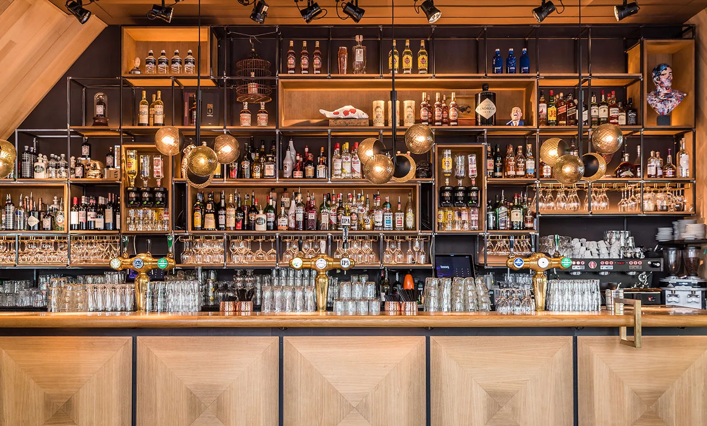
Plein 15-16, hartje Den Haag
Eigentijds café, warm en gezellig, no-nonsense met een stoere twist. Van de eerste espresso tot laat in het weekend.
Vandaag open
Aan het altijd levendige Plein vind je Barlow. 's Ochtends voor een espresso of een vers geperste jus d'orange. Lunchen of vergaderen op een unieke plek. Gezellig borrelen rond de open haard of aan de bar.
We hebben meerdere open wijnen per glas en verschillende speciale bieren van de tap. Maar vergeet ook onze cocktails niet. De dinerkaart is gevarieerd en eerlijk geprijsd, en we werken uitsluitend met dagverse ingrediënten.
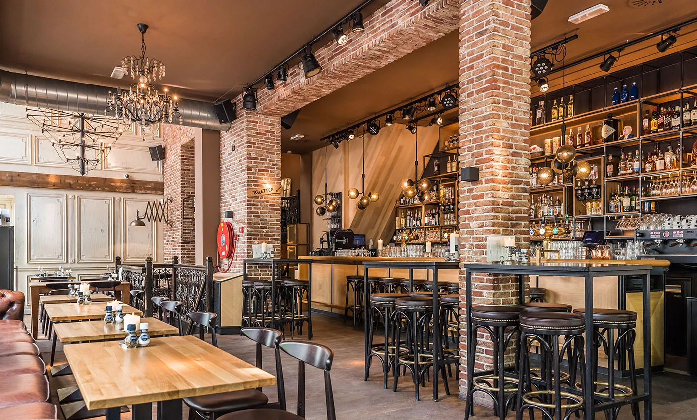
's Ochtends
Espresso, vers geperste jus en granola met boerenyoghurt. Zondag vanaf 10:00.
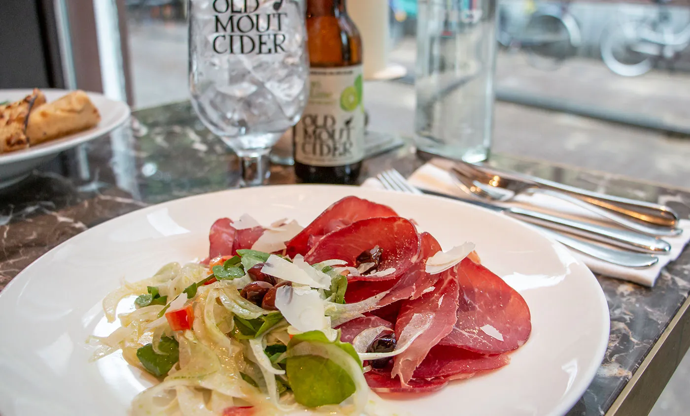
's Middags
Broodjes van Menno, soep, bowls en specials, tot 15:30.
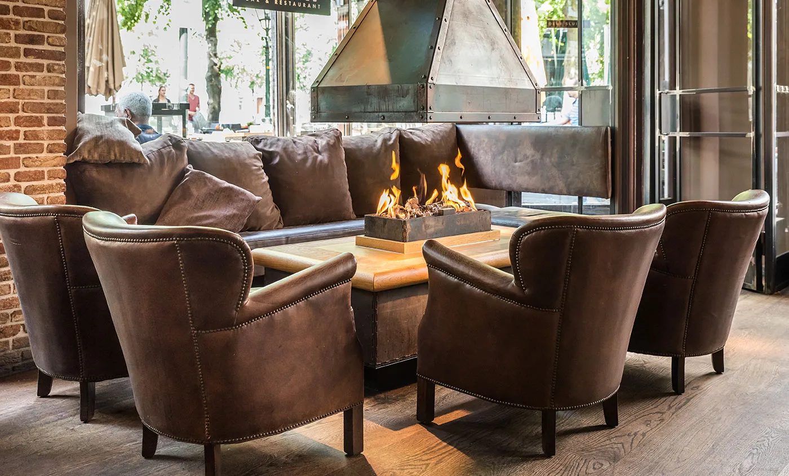
Borrel
Open wijnen per glas, speciaalbier van de tap. Rond de open haard of op het verwarmde terras.
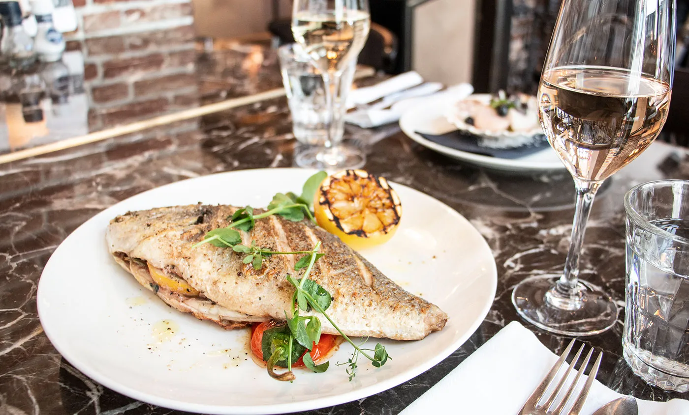
's Avonds
Vlees, vis en vega, eerlijk geprijsd. Keuken open tot 22:00.
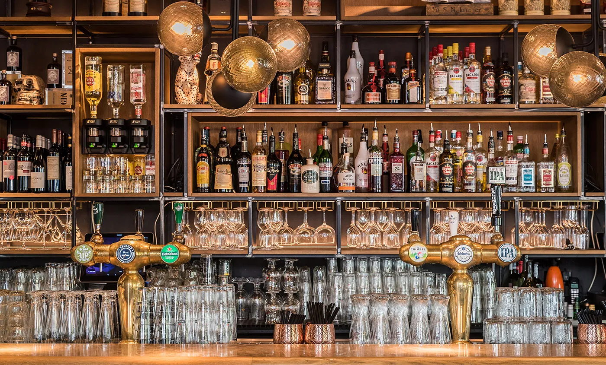
Weekend
Cocktails en goede muziek. Vrijdag en zaterdag tot 03:00.
Van een vergadering voor twee tot een private borrel voor zestig. In het restaurant is plek voor groepen tot ca. 30 personen; informeel borrelen kan op het verwarmde terras en rond de bar. Barlow heeft daarnaast drie besloten zalen, elk met een eigen uitstraling, voor zakelijk en privé.
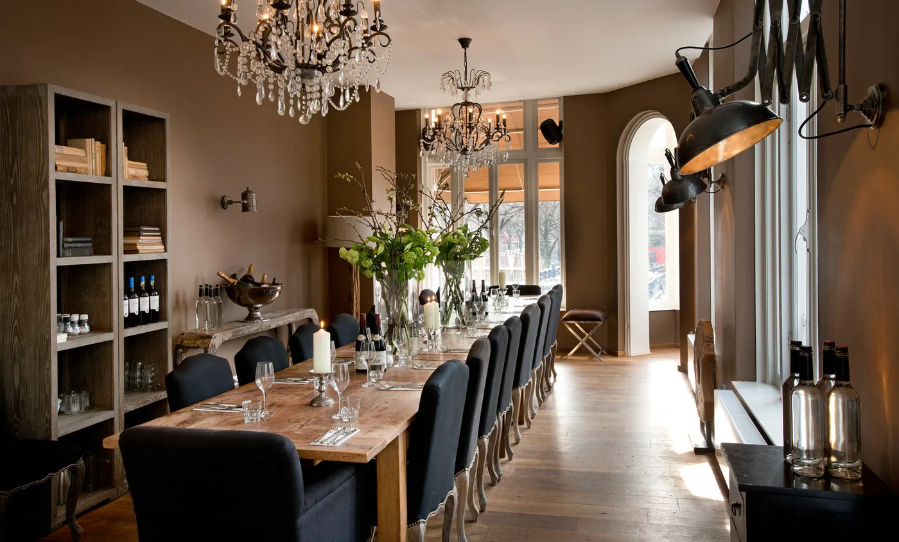
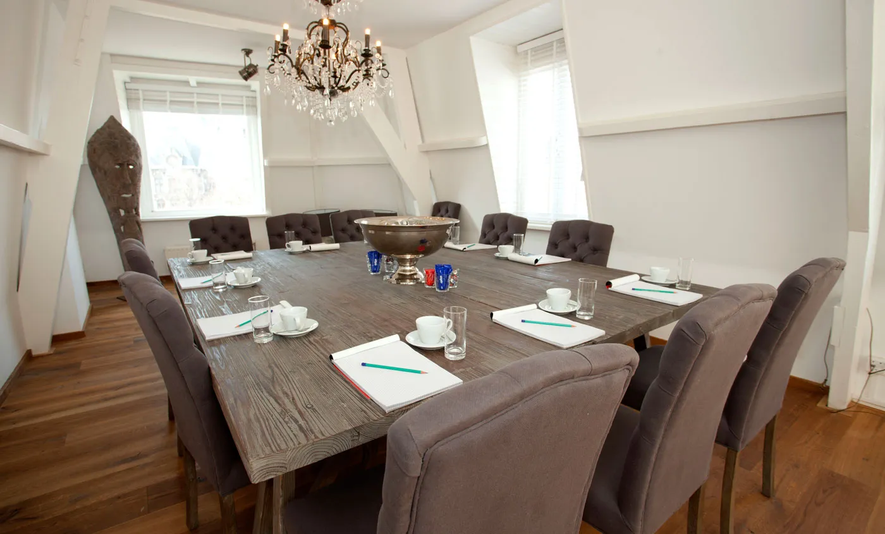
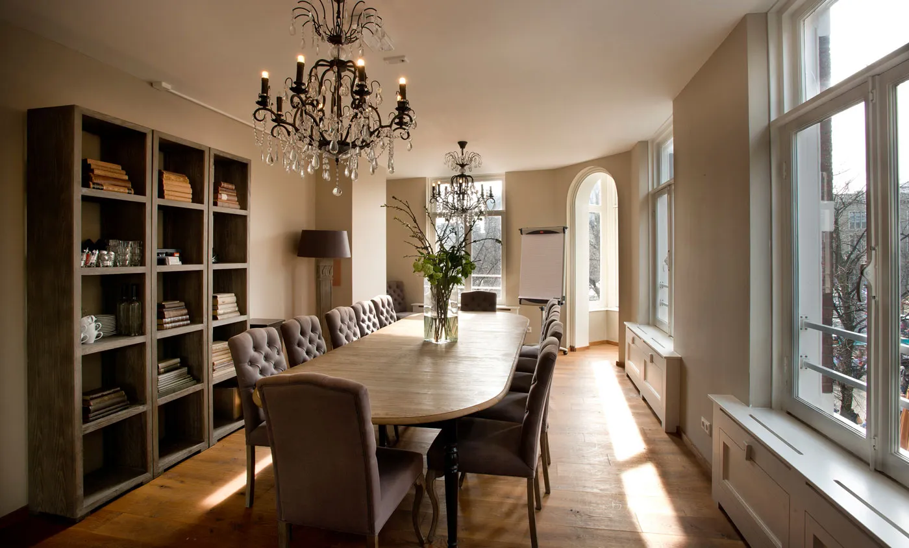
| Opstelling | Jack's Room | Hendrick's Room | George's Room |
|---|---|---|---|
| Lange tafel | 20 | 12 | 14 |
| Meerdere tafels | 22 | - | 16 |
| Vierkante tafel | - | - | 12 |
| Ovale tafel | - | 12 | - |
| Theater | 22 | 16 | 16 |
| U-shape | - | 14 | 14 |
| Private borrel | 60 | - | - |
| Private dining | 22 | - | - |
€ 175
zaalhuur per dagdeel
08:30 - 17:00 of 17:00 - 00:00. Op vrijdag- en zaterdagavond is de zaal beschikbaar tot 23:00.
Alle zalen hebben daglicht, ramen die open kunnen en wifi. Je eigen laptop koppel je via streaming of HDMI aan ons scherm; voor de HDMI-kabel zorgen wij.
excl. zaalhuur
excl. zaalhuur
Schalen sandwiches met het brood van Menno (2 p.p.) met luxe beleg, inclusief 1 glas verse sap.
Schalen sandwiches met het brood van Menno (3 p.p.) met luxe beleg, inclusief 1 glas verse sap.
Romige bloemkoolsoep, cashew, oesterzwam, bieslook
of
Burrata, geroosterde amandelen, perzik, witlof, aceto balsamico, honing-citroendressing, toast van Menno
Kip suprême, dagverse groenten, pastinaak, tomaat-dragonroomsaus
of
Truffelrisotto, gebakken paddenstoelen, Parmezaanse kaas, rucola en truffelolie
Romige bloemkoolsoep, cashew, oesterzwam, bieslook
of
Burrata, geroosterde amandelen, perzik, witlof, aceto balsamico, honing-citroendressing, toast van Menno
Kip suprême, dagverse groenten, pastinaak, tomaat-dragonroomsaus
of
US beef burger, bacon, cheddar, Barlow-saus, augurk, rode ui
of
Truffelrisotto, gebakken paddenstoelen, Parmezaanse kaas, rucola en truffelolie
Op tafel om te delen: verse friet en groene salade
Dessert (optioneel)
Steak tartaar (rauw), zacht Haags eitje, worcestershiresaus, augurk, Parmezaan, balsamico crumble en toast van Menno
of
Tonijn tataki, wakame, radijs, wasabimayo, sesamdressing
of
Burrata, geroosterde amandelen, perzik, witlof, aceto balsamico, honing-citroendressing en toast van Menno
Ribeye met dagverse groenten, roseval, beurre de Paris
of
Zeebaars met dagverse groenten, roseval en antiboise
of
Truffelrisotto, gebakken paddenstoelen, Parmezaanse kaas, rucola en truffelolie
Op tafel om te delen: verse friet en groene salade
Dessert (optioneel)
Alle hoofdgerechten worden geserveerd met verse friet en groene salade op tafel om te delen. Andere wensen of budget? Laat het ons gerust weten.
20 stuks
Fried shrimps, kaasblokjes, mini frikandellen, Haagsche bitterballen, Haagsche kaasstengels en vegetarische loempia's.
16 stuks
Kaasblokjes, olijven, bietenbitterbal (vegan), cheddar-jalapeño kroket, Haagsche kaasstengels en vegetarische loempia's.
6 personen
Groenten met labneh & harissa, olijven en nootjes.
Een zaal huren, Barlow exclusief afhuren of een advies op maat? Mail info@barlowdenhaag.nl of bel 070 392 36 55.
Meer info in onze brochure: Nederlands · English (PDF)
Baksteen, eikenhout, messing en een open haard.
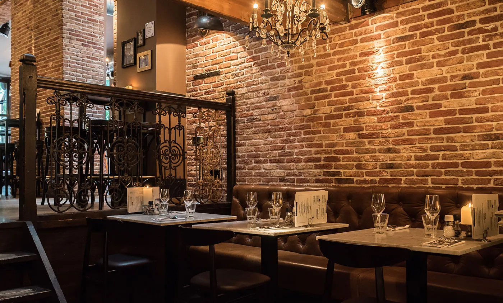
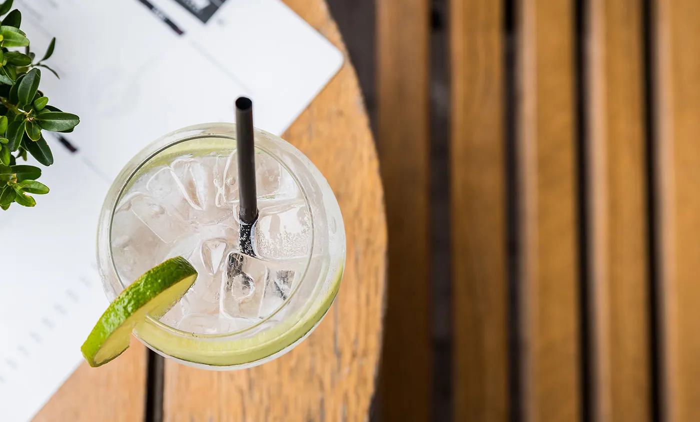
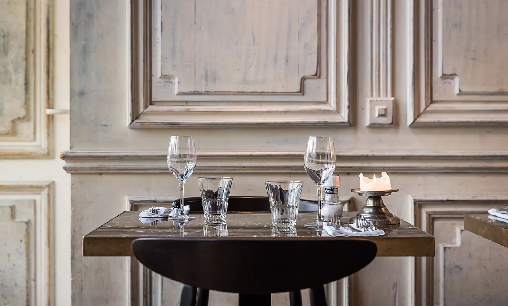
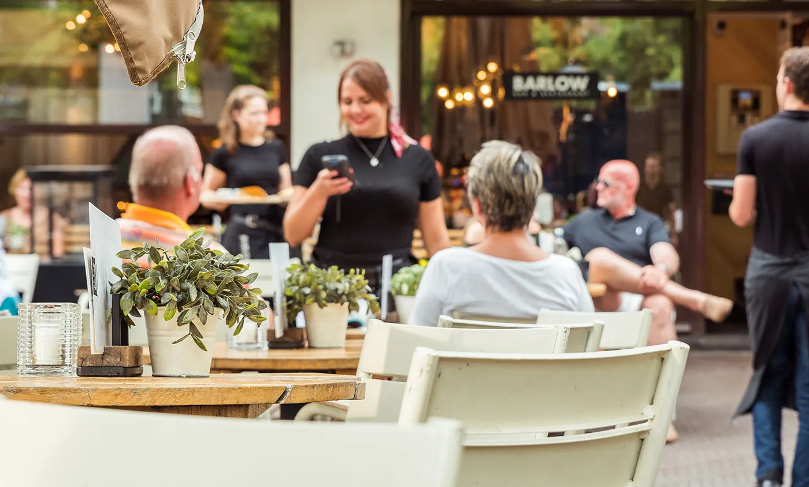
Voor een tafel, een groep of een zaal: bel of mail ons, of laat hieronder je wensen achter. We nemen zo snel mogelijk contact op.
Ben jij die leuke collega die ons team wil komen versterken? Ben je collegiaal, gastgericht en heb je een no-nonsense mentaliteit? Laat je gegevens achter.
070 392 36 55
info@barlowdenhaag.nl
| Maandag | 08:30 - 01:00 |
|---|---|
| Dinsdag | 08:30 - 01:00 |
| Woensdag | 08:30 - 01:00 |
| Donderdag | 08:30 - 01:00 |
| Vrijdag | 08:30 - 03:00 |
| Zaterdag | 08:30 - 03:00 |
| Zondag | 10:00 - 01:00 |
De keuken is elke dag open van 09:00 tot 22:00.
Reserveer vooraf online een parkeerplek bij Interparking Museumkwartier, op 4 minuten lopen van Barlow. Met Day Trip Parking sta je er de hele dag vanaf € 10,00. parkereninmuseumkwartier.nl
Cash, pin of creditcard (geen American Express). Op factuur vanaf € 250,00 kosteloos per e-mail; daaronder rekenen we € 10,00 administratiekosten. Voor een factuur hebben we je factuurgegevens en een kopie legitimatie nodig. Op al onze transacties zijn de algemene voorwaarden van Koninklijke Horeca Nederland van toepassing.
De sfeer bij Barlow is voor onze gasten, onze medewerkers en de omgeving bepalend. We houden het zo aantrekkelijk en veilig mogelijk; volg daarom altijd de aanwijzingen van het personeel op. Klachten en vragen: info@barlowdenhaag.nl.
Barlow stelt eisen aan kleding en voorkomen (onder andere sportkleding). Voldoe je daar niet aan, dan kan de toegang worden ontzegd.
Wapens zijn niet toegestaan; ook een zakmes geldt als wapen. Bij wapenbezit schakelen we de politie in. Gebruik of bezit van hard- of softdrugs is verboden en leidt tot verwijdering.
Ongewenste intimiteiten, racisme, discriminatie, bedreiging en agressie zijn verboden en worden gemeld bij de politie. Wie zich hinderlijk gedraagt krijgt één waarschuwing; bij herhaling volgt verwijdering en een tijdelijke of onvoorwaardelijke ontzegging. Hinderlijk samenscholen is niet toegestaan. Toiletten zijn alleen voor individueel gebruik.
Barlow is rookvrij, behalve het terras. Bestel altijd een consumptie en gebruik die binnen of op het terras; eten en drinken van buiten mag niet mee naar binnen. Alcohol schenken we alleen aan personen boven de 18 jaar. Glaswerk en andere eigendommen blijven binnen of op het terras; schade wordt verhaald.
Maak bij binnenkomen en vertrekken geen overmatig lawaai. Klachten graag meteen melden bij een medewerker en de volgende dag contact opnemen; achteraf kunnen we vaak weinig meer doen. Barlow is niet aansprakelijk voor verloren eigendommen; gevonden voorwerpen lever je in bij de bedrijfsleiding, ophalen kan op vertoon van legitimatie.
Wie de huisregels overtreedt, kan direct de toegang worden ontzegd; strafbare feiten melden we bij de politie. In Barlow wordt cameratoezicht gebruikt; beelden kunnen bij ongeregeldheden of ongevallen aan derden worden getoond.